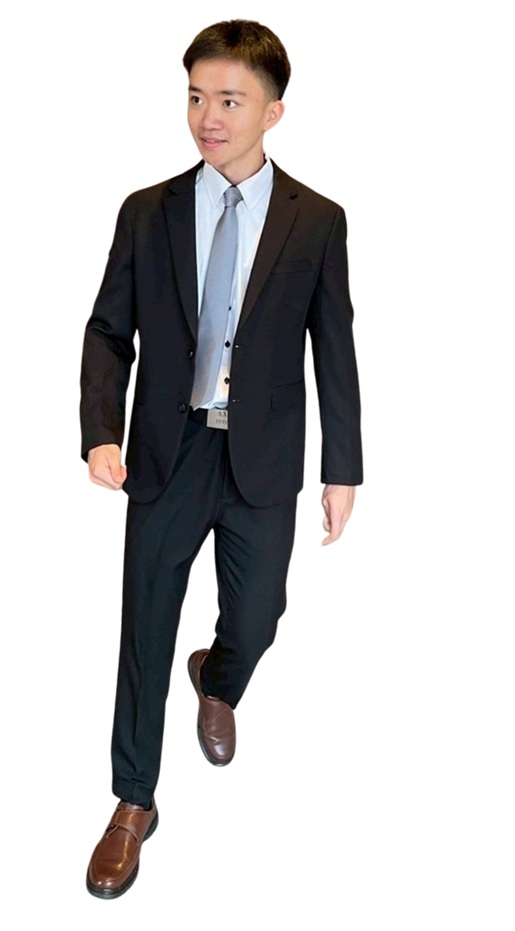

Logic & Passion | 法文線上教室
教學特質： 充滿熱忱且極具耐心。身為跨領域學習者，他深知台灣學生學習法文的痛點，能以邏輯清晰、易於理解的技巧帶領學生突破關卡。
「本週學了數字與購物常用單字。法文數字 97 竟然是 4x20+10+7！規則雖然獨特但了解邏輯後發現非常有道理。實戰對話對之後出國幫助很大，Paul 的課程真的會讓人上癮！」
— 清大共學計畫學員 A
「點餐與數數課程非常有趣且實用！發音雖然很有挑戰性，但在 Paul 的帶領下學到了許多技巧，這堂課非常值得一試。」
— 清大共學計畫學員 B